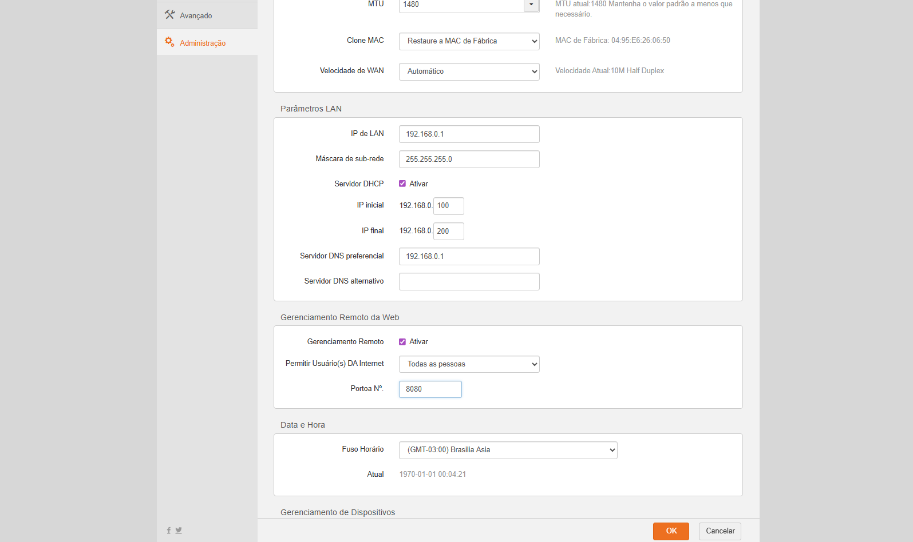

Ip para acesso ao equipamento
192.168.0.1
Configuração da WAN do Cliente.
Especificar WLAN Settings
Habilitar SIP para uso de VOIP

Necessário clicar em ADD e depois salvar ( IP do voip :
191.242.104.226
)
Para fazer o Download do firmware atualizado,
Clique aqui